Actividades para primaria
El sistema solar es un lugar enorme y prácticamente vacío. Representar en una misma escala los tamaños y las distancias del sistema solar es una actividad titánica.
Seguro que alguna vez has visto una representación del sistema solar parecida a esta
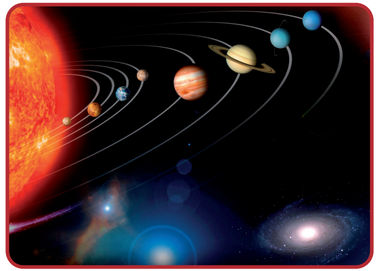
¿Crees que esta representación está a escala? Es decir, ¿crees que los tamaños de los planetas y del Sol mantienen una proporción en cuanto al tamaño y a la distancia?
Tamaños en el sistema solar
Para esta actividad vas a necesitar:
- Una tela circular de 2000 mm de diámetro (mejor de color amarillo).
- Folios blancos
- Compas
Extendemos sobre el suelo la tela circular de 2 metros de diámetro.
Esta silueta será el Sol
Recortamos la silueta de los 8 planetas del sistema solar.
Comenzaremos tomando los dos folios, y con ayuda de un compás, dibujaremos 8 circunferencias, que se corresponden con el diámetro ecuatorial de cada uno de los planetas de nuestro Sistema Solar. No diremos el nombre del planeta (ni siquiera
en el orden correcto) sino únicamente su diámetro en mm: 10 mm, 205 mm, 18 mm, 7 mm, 71 mm, 173 mm, 73 mm, 17 mm
Colocamos sobre la silueta del Sol los planetas.
Les pedimos a los alumnos y alumnas que identifiquen a que planeta corresponde cada circunferencia. Los planetas están a la misma escala con la que hemos representado el Sol. La correspondencia es la siguiente
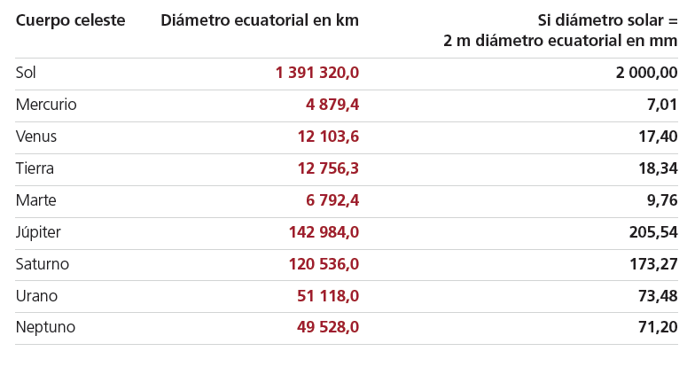
Ahora que sabemos que la Tierra está representada con 18,34 mm de diámetro, ¿cuánto medira la Luna?
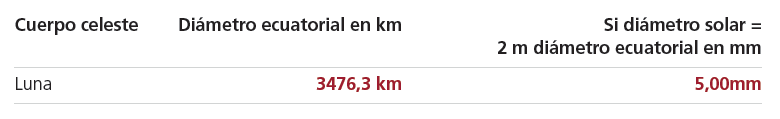
Distancias en el sistema solar
Si continuáramos con esta escala.
- ¿A que distancia del Sol tendríamos que colocar la Tierra?
- ¿A qué distancia de la Tierra tendríamos que colocar la Luna?
- A que distancia del Sol tendrías que colocar cada uno de los planetas?
El sistema solar en una hoja de papel
Vamos a visualizar las distancias del sistema solar utilizando una tira de papel.
- Toma una hoja de papel de tamaño A3 y divídela a lo largo haciendo tiras de 7 cm.
- Pon el papel en posición horizontal y
- en el lado izquierdo de la tira de papel, justo en el borde (sin margen), marcamos un puntito que será el Sol.
- el otro extremo haremos otra marca. Será el Cinturón de Kuiper.
- Doblamos el papel por la mitad y lo volvemos a abrir. En la marca que ha quedado escribiremos en vertical Urano. En nuestra escala, esa es la distancia a la que se encontraría ese planeta.
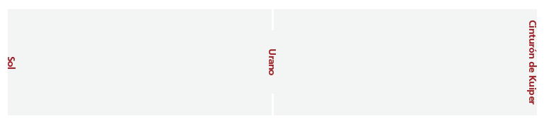
- Entre Urano y el Sol doblamos el papel por la mitad y en esa marca colocamos a Saturno.
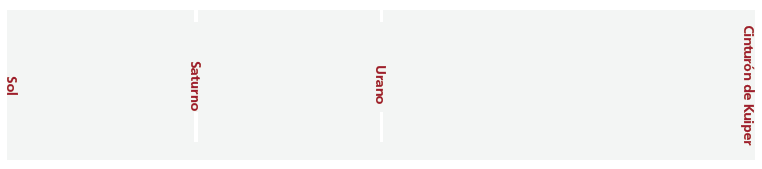
- Continuamos haciendo un doblez entre Saturno y el Sol y colocamos a Júpiter.
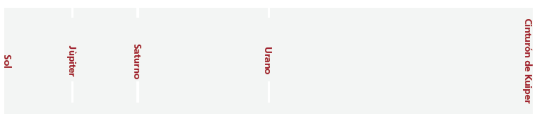
- Realizamos un nuevo doblez entre Júpiter y el Sol. Esa marca corresponde, más o menos a la zona del cinturón de asteroides.
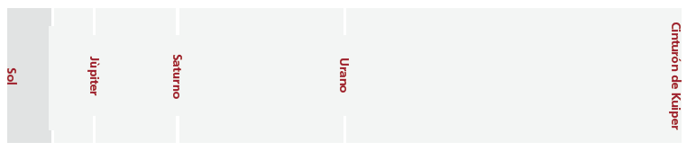
- Ahora viene lo más difícil porque en el espacio que nos queda entre la última marca y el borde donde está el Sol debemos hacer 3 dobleces más.
- Si entre la última marca y el borde izquierdo hacemos un doblez por la mitad, tendremos la posición de Marte (En el dibujo no se aprecia bien). Escribiremos Marte.
- Volvemos a hacer otro doblez por la mitad y tendremos más o menos la posición de la Tierra.
- Hacemos otro y tendremos la posición de Venus (la cosa se complica)
- Por último volvemos a hacer otra más y tendremos la posición de Mercurio.
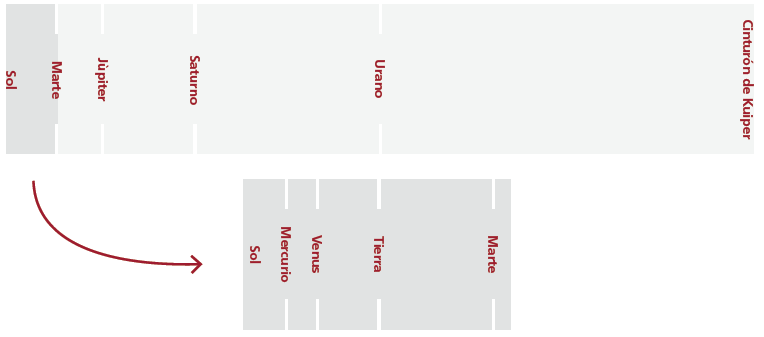
- Para ubicar al planeta más lejano de nuestro Sistema Solar, Neptuno. Deberemos realizar tres dobleces
- Primero doblamos el papel entre Urano y el Cinturón de Kuiper
- Después volvemos a doblar por la mitad entre ese último doblez marcado y de nuevo el Cinturón. Nos quedarán dos marcas.
- Por último hacemos un nuevo doblez en el centro, y ahí colocaremos a Neptuno.
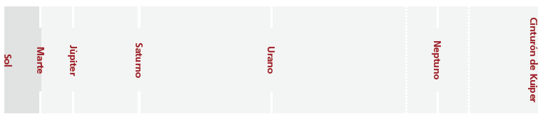
- Estira tu papel y tendrás el sistema solar a escala en una tira de papel
Nota: Esta actividad que te proponemos es solamente visual y no representa las posiciones exactas.
Si hacemos esta actividad con los más pequeños y solo quedemos resaltar lo juntos y pegados al So que están los planetas interiores comparados con las enormes distancias que hay a los planetas exteriores podemos:
1. Obviar el cinturón de asteroides y en la marca correspondiente a doblar el papel entre Júpiter y el Sol colocar al planeta Marte.
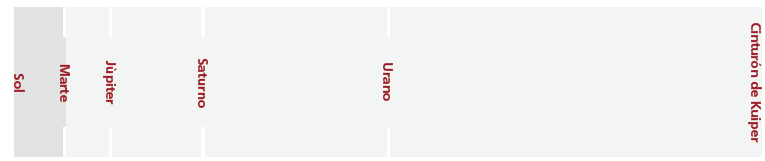
2. Entre Marte y el Sol hacer otro doblez que correspondería a la Tierra y así sucesivamente para Venus y en un último y pequeño doblez a Mercurio.
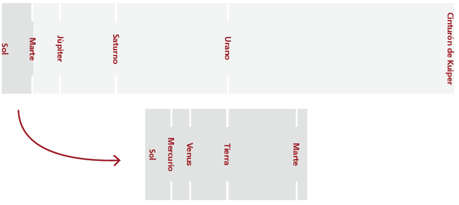
Lo que se pierde en rigor se gana en sencillez y facilidad a la hora de hacer los dobleces. El resultado visual es exactamente igual
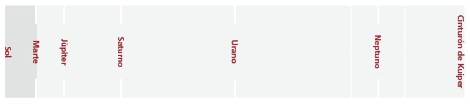
Si la Luna fuera del tamaño de un pixel....
Este aplicación muestra lo vacío que está el sistema solar. Pero para que te hagas una idea más visual, utiliza la siguiente aplicación web.
En esta aplicación, 1 pixel de tu pantalla equivale al tamaño de la Luna. Si quieres ver lo vacío que está el sistema solar, haz scroll y con esa escala, encuentra los planetas del sistema solar.